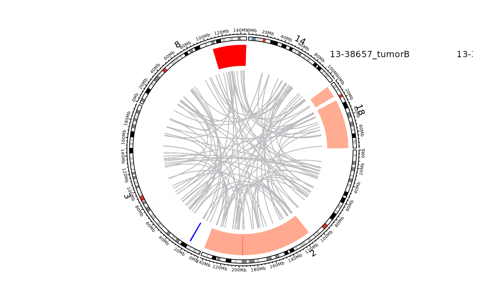

plot_sample_circos.RdPlot a sample-centric circos overview.
plot_sample_circos(
this_sample_id,
sv_df,
cnv_df,
ssm_df,
include_sv = TRUE,
include_ssm = FALSE,
legend_metadata_columns,
legend_metadata_names = c(),
include_cnv = TRUE,
this_projection = "grch37",
chrom_list,
label_genes,
auto_label_sv = FALSE
)Sample ID for the sample to plot.
Optional data frame of SVs. If not provided this function will run get_manta_sv to retrieve SVs.
Optional data frame of CNVs. If not provided, this function will run get_sample_cn_segments to retrieve CNVs.
This parameter does not do anything yet. Maybe it was meant to be implemented.
Default TRUE. (does not do anything yet).
Defaul FALSE. (does not do anything yet).
Column names from metadata
List of metadata names to be plotted.
Default TRUE. (does not do anything yet).
The selected projection, default is grch37 and it's the only supported peojection.
List of chromosomes to be plotted. If not stated, chr1-22+X will bes used.
Gene labels (df, list or what type?)
Default is FALSE
Nothing
This function takes a sample ID in the this_sample_id parameter.
Optionally, the user can supply already loaded data frames (SV, CNV, SSM) with the sv_df, cnv_df and ssm_df parameters.
Convenient Boolean parameteers are also avaialble for restricting the plot to specific mutation types (include_sv, include_cnv, and include_ssm).
plot_sample_circos(this_sample_id = "13-38657_tumorB",
legend_metadata_columns = c("pathology",
"lymphgen",
"COO_consensus",
"DHITsig_consensus",
"bcl2_ba",
"myc_ba"),
legend_metadata_names = c("pathology",
"LymphGen",
"COO",
"DHITsig",
"BCL2",
"MYC"),
chrom_list = c("chr2",
"chr3",
"chr8",
"chr14",
"chr18"))
#> Reading 01-16433_tumorC from: /projects/nhl_meta_analysis_scratch/gambl/results_local/gambl/manta_current/99-outputs/bedpe/genome--grch37/somaticSV/01-16433_tumorC--01-16433_normal--matched.somaticSV.bedpe
#> Reading 012-02-1TD from: /projects/nhl_meta_analysis_scratch/gambl/results_local/gambl/manta_current/99-outputs/bedpe/genome--hs37d5/somaticSV/012-02-1TD--012-0034-01ND--matched.somaticSV.bedpe
#> Reading 012-11-01TD from: /projects/nhl_meta_analysis_scratch/gambl/results_local/gambl/manta_current/99-outputs/bedpe/genome--hs37d5/somaticSV/012-11-01TD--012-0034-01ND--matched.somaticSV.bedpe
#> Reading 012-13-01TD from: /projects/nhl_meta_analysis_scratch/gambl/results_local/gambl/manta_current/99-outputs/bedpe/genome--hs37d5/somaticSV/012-13-01TD--012-0034-01ND--matched.somaticSV.bedpe
#> Reading 012-15-01TD from: /projects/nhl_meta_analysis_scratch/gambl/results_local/gambl/manta_current/99-outputs/bedpe/genome--hs37d5/somaticSV/012-15-01TD--012-0034-01ND--matched.somaticSV.bedpe
#> Reading 012-16-01TD from: /projects/nhl_meta_analysis_scratch/gambl/results_local/gambl/manta_current/99-outputs/bedpe/genome--hs37d5/somaticSV/012-16-01TD--012-0034-01ND--matched.somaticSV.bedpe
#> Reading 012-17-01TD from: /projects/nhl_meta_analysis_scratch/gambl/results_local/gambl/manta_current/99-outputs/bedpe/genome--hs37d5/somaticSV/012-17-01TD--012-0034-01ND--matched.somaticSV.bedpe
#> Reading 012-18-01TD from: /projects/nhl_meta_analysis_scratch/gambl/results_local/gambl/manta_current/99-outputs/bedpe/genome--hs37d5/somaticSV/012-18-01TD--012-0034-01ND--matched.somaticSV.bedpe
#> Reading 012-19-01TD from: /projects/nhl_meta_analysis_scratch/gambl/results_local/gambl/manta_current/99-outputs/bedpe/genome--hs37d5/somaticSV/012-19-01TD--012-0034-01ND--matched.somaticSV.bedpe
#> Reading 019-0047-01TD from: /projects/nhl_meta_analysis_scratch/gambl/results_local/gambl/manta_current/99-outputs/bedpe/genome--hs37d5/somaticSV/019-0047-01TD--019-0048-01ND--matched.somaticSV.bedpe
#> Reading 019-05-01TD from: /projects/nhl_meta_analysis_scratch/gambl/results_local/gambl/manta_current/99-outputs/bedpe/genome--hs37d5/somaticSV/019-05-01TD--019-0048-01ND--matched.somaticSV.bedpe
#> Reading 019-12-02TD from: /projects/nhl_meta_analysis_scratch/gambl/results_local/gambl/manta_current/99-outputs/bedpe/genome--hs37d5/somaticSV/019-12-02TD--019-0048-01ND--matched.somaticSV.bedpe
#> Reading 019-15-01TD from: /projects/nhl_meta_analysis_scratch/gambl/results_local/gambl/manta_current/99-outputs/bedpe/genome--hs37d5/somaticSV/019-15-01TD--019-0048-01ND--matched.somaticSV.bedpe
#> Reading 019-18-01TD from: /projects/nhl_meta_analysis_scratch/gambl/results_local/gambl/manta_current/99-outputs/bedpe/genome--hs37d5/somaticSV/019-18-01TD--019-0048-01ND--matched.somaticSV.bedpe
#> Reading 019-19-01TD from: /projects/nhl_meta_analysis_scratch/gambl/results_local/gambl/manta_current/99-outputs/bedpe/genome--hs37d5/somaticSV/019-19-01TD--019-0048-01ND--matched.somaticSV.bedpe
#> Reading 02-11368_tumorB from: /projects/nhl_meta_analysis_scratch/gambl/results_local/gambl/manta_current/99-outputs/bedpe/genome--grch37/somaticSV/02-11368_tumorB--02-11368_normal--matched.somaticSV.bedpe
#> Reading 02-15745_tumorA from: /projects/nhl_meta_analysis_scratch/gambl/results_local/gambl/manta_current/99-outputs/bedpe/genome--grch37/somaticSV/02-15745_tumorA--02-15745_normal--matched.somaticSV.bedpe
#> Reading 02-15745_tumorB from: /projects/nhl_meta_analysis_scratch/gambl/results_local/gambl/manta_current/99-outputs/bedpe/genome--grch37/somaticSV/02-15745_tumorB--02-15745_normal--matched.somaticSV.bedpe
#> Reading 02-15745_tumorC from: /projects/nhl_meta_analysis_scratch/gambl/results_local/gambl/manta_current/99-outputs/bedpe/genome--grch37/somaticSV/02-15745_tumorC--02-15745_normal--matched.somaticSV.bedpe
#> Reading 03-24364_tumorA from: /projects/nhl_meta_analysis_scratch/gambl/results_local/gambl/manta_current/99-outputs/bedpe/genome--grch37/somaticSV/03-24364_tumorA--03-24364_normal--matched.somaticSV.bedpe
#> Reading 03-28283_tumorB from: /projects/nhl_meta_analysis_scratch/gambl/results_local/gambl/manta_current/99-outputs/bedpe/genome--grch37/somaticSV/03-28283_tumorB--03-28283_normal--matched.somaticSV.bedpe
#> Reading 05-11115_tumorA from: /projects/nhl_meta_analysis_scratch/gambl/results_local/gambl/manta_current/99-outputs/bedpe/genome--grch37/somaticSV/05-11115_tumorA--05-11115_normal--matched.somaticSV.bedpe
#> Reading 05-11115_tumorB from: /projects/nhl_meta_analysis_scratch/gambl/results_local/gambl/manta_current/99-outputs/bedpe/genome--grch37/somaticSV/05-11115_tumorB--05-11115_normal--matched.somaticSV.bedpe
#> Reading 05-11115_tumorC from: /projects/nhl_meta_analysis_scratch/gambl/results_local/gambl/manta_current/99-outputs/bedpe/genome--grch37/somaticSV/05-11115_tumorC--05-11115_normal--matched.somaticSV.bedpe
#> Reading 05-11115_tumorD from: /projects/nhl_meta_analysis_scratch/gambl/results_local/gambl/manta_current/99-outputs/bedpe/genome--grch37/somaticSV/05-11115_tumorD--05-11115_normal--matched.somaticSV.bedpe
#> Reading 05-11115_tumorE from: /projects/nhl_meta_analysis_scratch/gambl/results_local/gambl/manta_current/99-outputs/bedpe/genome--grch37/somaticSV/05-11115_tumorE--05-11115_normal--matched.somaticSV.bedpe
#> Reading 05-11725_tumorB from: /projects/nhl_meta_analysis_scratch/gambl/results_local/gambl/manta_current/99-outputs/bedpe/genome--grch37/somaticSV/05-11725_tumorB--05-11725_normal--matched.somaticSV.bedpe
#> Reading 05-15635_tumorA from: /projects/nhl_meta_analysis_scratch/gambl/results_local/gambl/manta_current/99-outputs/bedpe/genome--grch37/somaticSV/05-15635_tumorA--05-15635_normal--matched.somaticSV.bedpe
#> Reading 05-15635_tumorB from: /projects/nhl_meta_analysis_scratch/gambl/results_local/gambl/manta_current/99-outputs/bedpe/genome--grch37/somaticSV/05-15635_tumorB--05-15635_normal--matched.somaticSV.bedpe
#> Reading 05-27675_tumorA from: /projects/nhl_meta_analysis_scratch/gambl/results_local/gambl/manta_current/99-outputs/bedpe/genome--grch37/somaticSV/05-27675_tumorA--05-27675_normal--matched.somaticSV.bedpe
#> Reading 05-28753_tumorA from: /projects/nhl_meta_analysis_scratch/gambl/results_local/gambl/manta_current/99-outputs/bedpe/genome--grch37/somaticSV/05-28753_tumorA--05-28753N--matched.somaticSV.bedpe
#> Reading 05-28753_tumorB from: /projects/nhl_meta_analysis_scratch/gambl/results_local/gambl/manta_current/99-outputs/bedpe/genome--grch37/somaticSV/05-28753_tumorB--05-28753N--matched.somaticSV.bedpe
#> Reading 05-28753_tumorC from: /projects/nhl_meta_analysis_scratch/gambl/results_local/gambl/manta_current/99-outputs/bedpe/genome--grch37/somaticSV/05-28753_tumorC--05-28753N--matched.somaticSV.bedpe
#> Reading 06-28477_tumorA from: /projects/nhl_meta_analysis_scratch/gambl/results_local/gambl/manta_current/99-outputs/bedpe/genome--grch37/somaticSV/06-28477_tumorA--FL2002N--matched.somaticSV.bedpe
#> Reading 063-0127-01TD from: /projects/nhl_meta_analysis_scratch/gambl/results_local/gambl/manta_current/99-outputs/bedpe/genome--hs37d5/somaticSV/063-0127-01TD--063-0126-02ND--matched.somaticSV.bedpe
#> Reading 063-02-1TD from: /projects/nhl_meta_analysis_scratch/gambl/results_local/gambl/manta_current/99-outputs/bedpe/genome--hs37d5/somaticSV/063-02-1TD--063-0126-02ND--matched.somaticSV.bedpe
#> Reading 063-08-04BD from: /projects/nhl_meta_analysis_scratch/gambl/results_local/gambl/manta_current/99-outputs/bedpe/genome--hs37d5/somaticSV/063-08-04BD--063-0126-02ND--matched.somaticSV.bedpe
#> Reading 063-09-01TD from: /projects/nhl_meta_analysis_scratch/gambl/results_local/gambl/manta_current/99-outputs/bedpe/genome--hs37d5/somaticSV/063-09-01TD--063-0126-02ND--matched.somaticSV.bedpe
#> Reading 08-26563_tumorA from: /projects/nhl_meta_analysis_scratch/gambl/results_local/gambl/manta_current/99-outputs/bedpe/genome--grch37/somaticSV/08-26563_tumorA--08-26563_normal--matched.somaticSV.bedpe
#> Reading 09-15148_tumorB from: /projects/nhl_meta_analysis_scratch/gambl/results_local/gambl/manta_current/99-outputs/bedpe/genome--grch37/somaticSV/09-15148_tumorB--09-15148_normal--matched.somaticSV.bedpe
#> Reading 09-31601_tumorB from: /projects/nhl_meta_analysis_scratch/gambl/results_local/gambl/manta_current/99-outputs/bedpe/genome--grch37/somaticSV/09-31601_tumorB--09-31601_normal--matched.somaticSV.bedpe
#> Reading 10-13016_tumorA from: /projects/nhl_meta_analysis_scratch/gambl/results_local/gambl/manta_current/99-outputs/bedpe/genome--grch37/somaticSV/10-13016_tumorA--10-13016_normal--matched.somaticSV.bedpe
#> Reading 10-18191T from: /projects/nhl_meta_analysis_scratch/gambl/results_local/gambl/manta_current/99-outputs/bedpe/genome--hs37d5/somaticSV/10-18191T--14-11247Normal--unmatched.somaticSV.bedpe
#> Reading 102-01-01TD from: /projects/nhl_meta_analysis_scratch/gambl/results_local/gambl/manta_current/99-outputs/bedpe/genome--hs37d5/somaticSV/102-01-01TD--14-11247Normal--unmatched.somaticSV.bedpe
#> Reading 102-0202-1DVT from: /projects/nhl_meta_analysis_scratch/gambl/results_local/gambl/manta_current/99-outputs/bedpe/genome--hs37d5/somaticSV/102-0202-1DVT--14-11247Normal--unmatched.somaticSV.bedpe
#> Reading 11-13204_tumorB from: /projects/nhl_meta_analysis_scratch/gambl/results_local/gambl/manta_current/99-outputs/bedpe/genome--grch37/somaticSV/11-13204_tumorB--11-13204_normal--matched.somaticSV.bedpe
#> Reading 12-11721_tumorB from: /projects/nhl_meta_analysis_scratch/gambl/results_local/gambl/manta_current/99-outputs/bedpe/genome--grch37/somaticSV/12-11721_tumorB--12-11721_normal--matched.somaticSV.bedpe
#> Reading 12-38161_tumorA from: /projects/nhl_meta_analysis_scratch/gambl/results_local/gambl/manta_current/99-outputs/bedpe/genome--grch37/somaticSV/12-38161_tumorA--12-38161_normal--matched.somaticSV.bedpe
#> Reading 13-27960_tumorB from: /projects/nhl_meta_analysis_scratch/gambl/results_local/gambl/manta_current/99-outputs/bedpe/genome--grch37/somaticSV/13-27960_tumorB--13-27960N--matched.somaticSV.bedpe
#> Reading 13-27975_tumorA from: /projects/nhl_meta_analysis_scratch/gambl/results_local/gambl/manta_current/99-outputs/bedpe/genome--grch37/somaticSV/13-27975_tumorA--13-27975_normal--matched.somaticSV.bedpe
#> Reading 13-27975_tumorB from: /projects/nhl_meta_analysis_scratch/gambl/results_local/gambl/manta_current/99-outputs/bedpe/genome--grch37/somaticSV/13-27975_tumorB--13-27975_normal--matched.somaticSV.bedpe
#> Reading 13F44-PL02 from: /projects/nhl_meta_analysis_scratch/gambl/results_local/gambl/manta_current/99-outputs/bedpe/genome--hg38/somaticSV/13F44-PL02--13089-DNA01--matched.somaticSV.bedpe
#> Reading 13I80-PL02 from: /projects/nhl_meta_analysis_scratch/gambl/results_local/gambl/manta_current/99-outputs/bedpe/genome--hg38/somaticSV/13I80-PL02--13575-DNA01--matched.somaticSV.bedpe
#> Reading 13N66-PL01 from: /projects/nhl_meta_analysis_scratch/gambl/results_local/gambl/manta_current/99-outputs/bedpe/genome--hg38/somaticSV/13N66-PL01--13G42-DNAGL01--matched.somaticSV.bedpe
#> Reading 14-11465_tumorB from: /projects/nhl_meta_analysis_scratch/gambl/results_local/gambl/manta_current/99-outputs/bedpe/genome--grch37/somaticSV/14-11465_tumorB--14-11465_normal--matched.somaticSV.bedpe
#> Reading 14-11777_tumorB from: /projects/nhl_meta_analysis_scratch/gambl/results_local/gambl/manta_current/99-outputs/bedpe/genome--grch37/somaticSV/14-11777_tumorB--14-11777N--matched.somaticSV.bedpe
#> Reading 14-26768_tumorA from: /projects/nhl_meta_analysis_scratch/gambl/results_local/gambl/manta_current/99-outputs/bedpe/genome--grch37/somaticSV/14-26768_tumorA--14-26768_normal--matched.somaticSV.bedpe
#> Reading 140127-PL02 from: /projects/nhl_meta_analysis_scratch/gambl/results_local/gambl/manta_current/99-outputs/bedpe/genome--hg38/somaticSV/140127-PL02--13430-GL-DNA--matched.somaticSV.bedpe
#> Reading 141498-PL01 from: /projects/nhl_meta_analysis_scratch/gambl/results_local/gambl/manta_current/99-outputs/bedpe/genome--hg38/somaticSV/141498-PL01--13C53-DNAGL02--matched.somaticSV.bedpe
#> Reading 141900-PL01 from: /projects/nhl_meta_analysis_scratch/gambl/results_local/gambl/manta_current/99-outputs/bedpe/genome--hg38/somaticSV/141900-PL01--141666-BC01--matched.somaticSV.bedpe
#> Reading 150327-PL02 from: /projects/nhl_meta_analysis_scratch/gambl/results_local/gambl/manta_current/99-outputs/bedpe/genome--hg38/somaticSV/150327-PL02--13F62-BC01--matched.somaticSV.bedpe
#> Reading 1523-01-01TD from: /projects/nhl_meta_analysis_scratch/gambl/results_local/gambl/manta_current/99-outputs/bedpe/genome--hs37d5/somaticSV/1523-01-01TD--1523-04-01ND--matched.somaticSV.bedpe
#> Reading 1523-03-01BD from: /projects/nhl_meta_analysis_scratch/gambl/results_local/gambl/manta_current/99-outputs/bedpe/genome--hs37d5/somaticSV/1523-03-01BD--1523-04-01ND--matched.somaticSV.bedpe
#> Reading 1563-01-03TD from: /projects/nhl_meta_analysis_scratch/gambl/results_local/gambl/manta_current/99-outputs/bedpe/genome--hs37d5/somaticSV/1563-01-03TD--1563-01-01ND--matched.somaticSV.bedpe
#> Reading 1563-02-01BD from: /projects/nhl_meta_analysis_scratch/gambl/results_local/gambl/manta_current/99-outputs/bedpe/genome--hs37d5/somaticSV/1563-02-01BD--1563-01-01ND--matched.somaticSV.bedpe
#> Reading 160745-PL04 from: /projects/nhl_meta_analysis_scratch/gambl/results_local/gambl/manta_current/99-outputs/bedpe/genome--hg38/somaticSV/160745-PL04--160942-BC01--matched.somaticSV.bedpe
#> Reading 161135-PL02 from: /projects/nhl_meta_analysis_scratch/gambl/results_local/gambl/manta_current/99-outputs/bedpe/genome--hg38/somaticSV/161135-PL02--160942-BC01--matched.somaticSV.bedpe
#> Reading 161396-PL02 from: /projects/nhl_meta_analysis_scratch/gambl/results_local/gambl/manta_current/99-outputs/bedpe/genome--hg38/somaticSV/161396-PL02--160942-BC01--matched.somaticSV.bedpe
#> Reading 161402-PL02 from: /projects/nhl_meta_analysis_scratch/gambl/results_local/gambl/manta_current/99-outputs/bedpe/genome--hg38/somaticSV/161402-PL02--140928-BC01--matched.somaticSV.bedpe
#> Reading 1669-04-01BD from: /projects/nhl_meta_analysis_scratch/gambl/results_local/gambl/manta_current/99-outputs/bedpe/genome--hs37d5/somaticSV/1669-04-01BD--1669-02-01ND--matched.somaticSV.bedpe
#> Reading 170867-PL02 from: /projects/nhl_meta_analysis_scratch/gambl/results_local/gambl/manta_current/99-outputs/bedpe/genome--hg38/somaticSV/170867-PL02--170458-BC01--matched.somaticSV.bedpe
#> Reading 171116-PL02 from: /projects/nhl_meta_analysis_scratch/gambl/results_local/gambl/manta_current/99-outputs/bedpe/genome--hg38/somaticSV/171116-PL02--170484-CS01--matched.somaticSV.bedpe
#> WARNING! No SV calls found in flat-file for: 171116-PL02
#> Reading 171290-PL01 from: /projects/nhl_meta_analysis_scratch/gambl/results_local/gambl/manta_current/99-outputs/bedpe/genome--hg38/somaticSV/171290-PL01--170458-BC01--matched.somaticSV.bedpe
#> Reading 171414-PL02 from: /projects/nhl_meta_analysis_scratch/gambl/results_local/gambl/manta_current/99-outputs/bedpe/genome--hg38/somaticSV/171414-PL02--171241-BC01--matched.somaticSV.bedpe
#> Reading 171447-PL01 from: /projects/nhl_meta_analysis_scratch/gambl/results_local/gambl/manta_current/99-outputs/bedpe/genome--hg38/somaticSV/171447-PL01--190142-DNAGL02--matched.somaticSV.bedpe
#> WARNING! No SV calls found in flat-file for: 171447-PL01
#> Reading 171451-PL01 from: /projects/nhl_meta_analysis_scratch/gambl/results_local/gambl/manta_current/99-outputs/bedpe/genome--hg38/somaticSV/171451-PL01--171328-BC01--matched.somaticSV.bedpe
#> WARNING! No SV calls found in flat-file for: 171451-PL01
#> Reading 180204-PL01-PL02 from: /projects/nhl_meta_analysis_scratch/gambl/results_local/gambl/manta_current/99-outputs/bedpe/genome--hg38/somaticSV/180204-PL01-PL02--171364-BC01--matched.somaticSV.bedpe
#> Reading 180445-PL02 from: /projects/nhl_meta_analysis_scratch/gambl/results_local/gambl/manta_current/99-outputs/bedpe/genome--hg38/somaticSV/180445-PL02--171241-BC01--matched.somaticSV.bedpe
#> Reading 180840-PL01 from: /projects/nhl_meta_analysis_scratch/gambl/results_local/gambl/manta_current/99-outputs/bedpe/genome--hg38/somaticSV/180840-PL01--180840-CS01--matched.somaticSV.bedpe
#> Reading 181712-PL01 from: /projects/nhl_meta_analysis_scratch/gambl/results_local/gambl/manta_current/99-outputs/bedpe/genome--hg38/somaticSV/181712-PL01--181677-BC01--matched.somaticSV.bedpe
#> Reading 190017-PL01 from: /projects/nhl_meta_analysis_scratch/gambl/results_local/gambl/manta_current/99-outputs/bedpe/genome--hg38/somaticSV/190017-PL01--181510-CS01--matched.somaticSV.bedpe
#> Reading 190128-PL01-PL02 from: /projects/nhl_meta_analysis_scratch/gambl/results_local/gambl/manta_current/99-outputs/bedpe/genome--hg38/somaticSV/190128-PL01-PL02--161134-DNAGL02--matched.somaticSV.bedpe
#> Reading 190806-PL01-PL02 from: /projects/nhl_meta_analysis_scratch/gambl/results_local/gambl/manta_current/99-outputs/bedpe/genome--hg38/somaticSV/190806-PL01-PL02--141055-DNAGL02--matched.somaticSV.bedpe
#> Reading 191457-PL02 from: /projects/nhl_meta_analysis_scratch/gambl/results_local/gambl/manta_current/99-outputs/bedpe/genome--hg38/somaticSV/191457-PL02--190142-DNAGL02--matched.somaticSV.bedpe
#> Reading 191510-PL02 from: /projects/nhl_meta_analysis_scratch/gambl/results_local/gambl/manta_current/99-outputs/bedpe/genome--hg38/somaticSV/191510-PL02--190263-BC01--matched.somaticSV.bedpe
#> Reading 191621-PL01 from: /projects/nhl_meta_analysis_scratch/gambl/results_local/gambl/manta_current/99-outputs/bedpe/genome--hg38/somaticSV/191621-PL01--190906-CS01--matched.somaticSV.bedpe
#> Reading 200836-PL01 from: /projects/nhl_meta_analysis_scratch/gambl/results_local/gambl/manta_current/99-outputs/bedpe/genome--hg38/somaticSV/200836-PL01--201151-BC01--matched.somaticSV.bedpe
#> Reading 210541-PL02 from: /projects/nhl_meta_analysis_scratch/gambl/results_local/gambl/manta_current/99-outputs/bedpe/genome--hg38/somaticSV/210541-PL02--211147-CS01--matched.somaticSV.bedpe
#> Reading 3034-03-01TD from: /projects/nhl_meta_analysis_scratch/gambl/results_local/gambl/manta_current/99-outputs/bedpe/genome--hs37d5/somaticSV/3034-03-01TD--3034-01-01ND--matched.somaticSV.bedpe
#> Reading 3034-04-01BD from: /projects/nhl_meta_analysis_scratch/gambl/results_local/gambl/manta_current/99-outputs/bedpe/genome--hs37d5/somaticSV/3034-04-01BD--3034-01-01ND--matched.somaticSV.bedpe
#> Reading 3299-01-02TD from: /projects/nhl_meta_analysis_scratch/gambl/results_local/gambl/manta_current/99-outputs/bedpe/genome--hs37d5/somaticSV/3299-01-02TD--3299-02-03ND--matched.somaticSV.bedpe
#> Reading 3299-02-01TD from: /projects/nhl_meta_analysis_scratch/gambl/results_local/gambl/manta_current/99-outputs/bedpe/genome--hs37d5/somaticSV/3299-02-01TD--3299-02-03ND--matched.somaticSV.bedpe
#> Reading 3299-03-01TD from: /projects/nhl_meta_analysis_scratch/gambl/results_local/gambl/manta_current/99-outputs/bedpe/genome--hs37d5/somaticSV/3299-03-01TD--3299-02-03ND--matched.somaticSV.bedpe
#> Reading 3299-04-1TD from: /projects/nhl_meta_analysis_scratch/gambl/results_local/gambl/manta_current/99-outputs/bedpe/genome--hs37d5/somaticSV/3299-04-1TD--3299-02-03ND--matched.somaticSV.bedpe
#> Reading 3299-05-01TD from: /projects/nhl_meta_analysis_scratch/gambl/results_local/gambl/manta_current/99-outputs/bedpe/genome--hs37d5/somaticSV/3299-05-01TD--3299-02-03ND--matched.somaticSV.bedpe
#> Reading 3495-02-01BD from: /projects/nhl_meta_analysis_scratch/gambl/results_local/gambl/manta_current/99-outputs/bedpe/genome--hs37d5/somaticSV/3495-02-01BD--14-11247Normal--unmatched.somaticSV.bedpe
#> Reading 3495-03-01BD from: /projects/nhl_meta_analysis_scratch/gambl/results_local/gambl/manta_current/99-outputs/bedpe/genome--hs37d5/somaticSV/3495-03-01BD--14-11247Normal--unmatched.somaticSV.bedpe
#> Reading 365-11-01BD from: /projects/nhl_meta_analysis_scratch/gambl/results_local/gambl/manta_current/99-outputs/bedpe/genome--hs37d5/somaticSV/365-11-01BD--365-01-01ND--matched.somaticSV.bedpe
#> Reading 365-16-01TD from: /projects/nhl_meta_analysis_scratch/gambl/results_local/gambl/manta_current/99-outputs/bedpe/genome--hs37d5/somaticSV/365-16-01TD--365-01-01ND--matched.somaticSV.bedpe
#> Reading 365-1951-01TD from: /projects/nhl_meta_analysis_scratch/gambl/results_local/gambl/manta_current/99-outputs/bedpe/genome--hs37d5/somaticSV/365-1951-01TD--365-01-01ND--matched.somaticSV.bedpe
#> Reading 4675-03-01BD from: /projects/nhl_meta_analysis_scratch/gambl/results_local/gambl/manta_current/99-outputs/bedpe/genome--hs37d5/somaticSV/4675-03-01BD--4675-05-01ND--matched.somaticSV.bedpe
#> Reading 4675-04-01BD from: /projects/nhl_meta_analysis_scratch/gambl/results_local/gambl/manta_current/99-outputs/bedpe/genome--hs37d5/somaticSV/4675-04-01BD--4675-05-01ND--matched.somaticSV.bedpe
#> Reading 4676-02-01BD from: /projects/nhl_meta_analysis_scratch/gambl/results_local/gambl/manta_current/99-outputs/bedpe/genome--hs37d5/somaticSV/4676-02-01BD--14-11247Normal--unmatched.somaticSV.bedpe
#> Reading 4686-02-01TD from: /projects/nhl_meta_analysis_scratch/gambl/results_local/gambl/manta_current/99-outputs/bedpe/genome--hs37d5/somaticSV/4686-02-01TD--14-11247Normal--unmatched.somaticSV.bedpe
#> Reading 4686-03-01BD from: /projects/nhl_meta_analysis_scratch/gambl/results_local/gambl/manta_current/99-outputs/bedpe/genome--hs37d5/somaticSV/4686-03-01BD--14-11247Normal--unmatched.somaticSV.bedpe
#> Reading 4687-02-01TD from: /projects/nhl_meta_analysis_scratch/gambl/results_local/gambl/manta_current/99-outputs/bedpe/genome--hs37d5/somaticSV/4687-02-01TD--14-11247Normal--unmatched.somaticSV.bedpe
#> Reading 4687-03-01BD from: /projects/nhl_meta_analysis_scratch/gambl/results_local/gambl/manta_current/99-outputs/bedpe/genome--hs37d5/somaticSV/4687-03-01BD--14-11247Normal--unmatched.somaticSV.bedpe
#> Reading 4690-02-01TD from: /projects/nhl_meta_analysis_scratch/gambl/results_local/gambl/manta_current/99-outputs/bedpe/genome--hs37d5/somaticSV/4690-02-01TD--14-11247Normal--unmatched.somaticSV.bedpe
#> Reading 4690-03-01BD from: /projects/nhl_meta_analysis_scratch/gambl/results_local/gambl/manta_current/99-outputs/bedpe/genome--hs37d5/somaticSV/4690-03-01BD--14-11247Normal--unmatched.somaticSV.bedpe
#> Reading 816-01-1TD from: /projects/nhl_meta_analysis_scratch/gambl/results_local/gambl/manta_current/99-outputs/bedpe/genome--hs37d5/somaticSV/816-01-1TD--816-05-02ND--matched.somaticSV.bedpe
#> Reading 816-06-01TD from: /projects/nhl_meta_analysis_scratch/gambl/results_local/gambl/manta_current/99-outputs/bedpe/genome--hs37d5/somaticSV/816-06-01TD--816-05-02ND--matched.somaticSV.bedpe
#> Reading 816-08-01TD from: /projects/nhl_meta_analysis_scratch/gambl/results_local/gambl/manta_current/99-outputs/bedpe/genome--hs37d5/somaticSV/816-08-01TD--816-05-02ND--matched.somaticSV.bedpe
#> Reading 835-01-02BD from: /projects/nhl_meta_analysis_scratch/gambl/results_local/gambl/manta_current/99-outputs/bedpe/genome--hs37d5/somaticSV/835-01-02BD--14-11247Normal--unmatched.somaticSV.bedpe
#> Reading 835-02-03TD from: /projects/nhl_meta_analysis_scratch/gambl/results_local/gambl/manta_current/99-outputs/bedpe/genome--hs37d5/somaticSV/835-02-03TD--14-11247Normal--unmatched.somaticSV.bedpe
#> Reading 839-01-1TD from: /projects/nhl_meta_analysis_scratch/gambl/results_local/gambl/manta_current/99-outputs/bedpe/genome--hs37d5/somaticSV/839-01-1TD--839-03-1ND--matched.somaticSV.bedpe
#> Reading 839-04-01BD from: /projects/nhl_meta_analysis_scratch/gambl/results_local/gambl/manta_current/99-outputs/bedpe/genome--hs37d5/somaticSV/839-04-01BD--839-03-1ND--matched.somaticSV.bedpe
#> Reading 97-28459_tumorB from: /projects/nhl_meta_analysis_scratch/gambl/results_local/gambl/manta_current/99-outputs/bedpe/genome--grch37/somaticSV/97-28459_tumorB--FL3006N--matched.somaticSV.bedpe
#> Reading 98-28290T from: /projects/nhl_meta_analysis_scratch/gambl/results_local/gambl/manta_current/99-outputs/bedpe/genome--hs37d5/somaticSV/98-28290T--14-11247Normal--unmatched.somaticSV.bedpe
#> Reading 98-30186_tumorA from: /projects/nhl_meta_analysis_scratch/gambl/results_local/gambl/manta_current/99-outputs/bedpe/genome--grch37/somaticSV/98-30186_tumorA--98-30186_normal--matched.somaticSV.bedpe
#> Reading 99-25549T from: /projects/nhl_meta_analysis_scratch/gambl/results_local/gambl/manta_current/99-outputs/bedpe/genome--hs37d5/somaticSV/99-25549T--14-11247Normal--unmatched.somaticSV.bedpe
#> Reading 99-27783_tumorA from: /projects/nhl_meta_analysis_scratch/gambl/results_local/gambl/manta_current/99-outputs/bedpe/genome--grch37/somaticSV/99-27783_tumorA--99-27783_normal--matched.somaticSV.bedpe
#> Reading 99-27783_tumorB from: /projects/nhl_meta_analysis_scratch/gambl/results_local/gambl/manta_current/99-outputs/bedpe/genome--grch37/somaticSV/99-27783_tumorB--99-27783_normal--matched.somaticSV.bedpe
#> Reading KM-H2 from: /projects/nhl_meta_analysis_scratch/gambl/results_local/gambl/manta_current/99-outputs/bedpe/genome--grch37/somaticSV/KM-H2--14-11247N--unmatched.somaticSV.bedpe
#> Reading L-428 from: /projects/nhl_meta_analysis_scratch/gambl/results_local/gambl/manta_current/99-outputs/bedpe/genome--grch37/somaticSV/L-428--14-11247N--unmatched.somaticSV.bedpe
#> [1] ">>>>>>>"
#> finding colour forDLBCL
#> [1] "<<<<<<<"
#> [1] "using alias to look up colours for pathology"
#> using pathology for pathology
#> adding:#479450
#> [1] ">>>>>>>"
#> finding colour forST2
#> [1] "<<<<<<<"
#> [1] "using alias to look up colours for lymphgen"
#> using lymphgen for lymphgen
#> adding:#C7371A
#> [1] ">>>>>>>"
#> finding colour forGCB
#> [1] "<<<<<<<"
#> [1] "using alias to look up colours for COO_consensus"
#> using coo for COO_consensus
#> adding:#F58F20
#> [1] ">>>>>>>"
#> finding colour forDHITsig-IND
#> [1] "<<<<<<<"
#> [1] "using alias to look up colours for DHITsig_consensus"
#> using coo for DHITsig_consensus
#> adding:#003049
#> [1] ">>>>>>>"
#> finding colour forPOS
#> [1] "<<<<<<<"
#> [1] "using alias to look up colours for bcl2_ba"
#> using pos_neg for bcl2_ba
#> adding:#c41230
#> [1] ">>>>>>>"
#> finding colour forPOS
#> [1] "<<<<<<<"
#> [1] "using alias to look up colours for myc_ba"
#> using pos_neg for myc_ba
#> adding:#c41230
#> DLBCL <NA> GCB DHITsig-IND POS POS
#> "#479450" NA "#F58F20" "#003049" "#c41230" "#c41230"
#> Error in gpar(fill = cols): could not find function "gpar"
